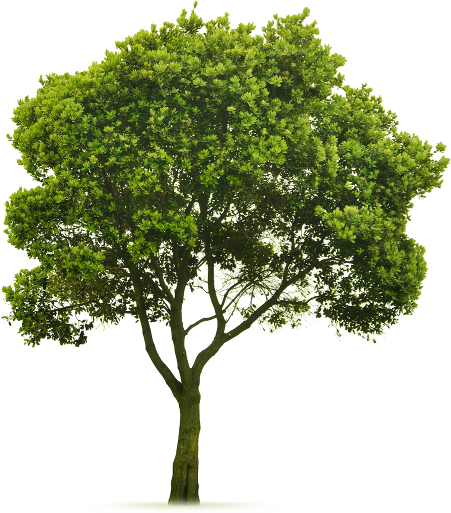

《庄子》里还有一个故事：
有棵树很大，但软得很，木质不行，想做什么都做不成。有个木匠就感叹道：“这样的树，长着有啥意义？” 树觉得很不服气，它说：“我如果有用的话，早就被人砍了，咋能活这么大岁数？我的无用，正是我的大用！”所以，是长是短，真不好说。在道家眼里，长的可能是短的，短的也可能是长的。
可见，长处与短处是相互转化的，正是因为木质软，什么都做不了，才没有遭受被人砍伐的下场；长处与短处相互对立，但又相互转化。
老子的目的，就是让你观察大自然有有无无的现象，观察缘起性空，观察各种现象的不断变化，然后破除执著，扫除分别心，进入圣人之境。
